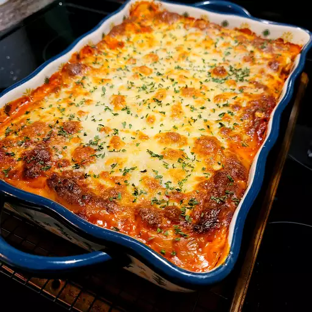

Homemade lasagna recipe

Description
Special homemade lasagna with a meaty, made-from-scratch
tomato sauce and a deliciously cheesy filling.
Serve with a leafy green salad and crusty garlic bread
Ingredients
Here is a list of ingredients you will need.
- 1 lbs of ground meat
- A diced onion
- A can of tomato sauce and a can of crushed tomatoes
- Two tablespoons of parsley and one crushed garlic glove
- A dash of sugar
- Dried basil, dried oregano, salt and black pepper
- Lasagna noodles
- Cottage cheese and parmesan, shredded mozzarella
- Eggs
Steps
Here is a step-by-step guide guide on the cooking process
- Cook the meat: Cook the ground meat in a skillet until browned and crumbly.
Add the onion and continue cooking until it's translucent.
Stir in the canned tomato products, half of the parsley, garlic,
basil, 1.5 teaspoons of salt, oregano, and sugar.
- Cook the noodles: Boil the lasagna noodles in lightly salted water until they're al dente.
- Make the cheese layer: Mix cottage cheese, Parmesan cheese, eggs, the remaining parsley,
the remaining salt, and pepper in a bowl.
- Assemle the lasagna: Layer the ingredients according to the recipe
(starting with sauce and ending with mozzarella) until the lasagna is assembled.
- Bake the lasagna: Cover with foil and bake in the preheated oven for about half an hour.
Remove the foil and continue baking until the top is golden brown.